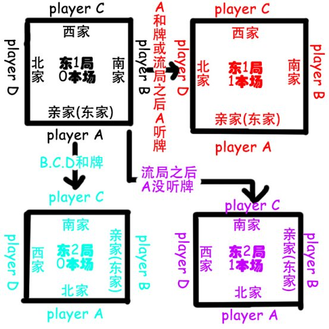

关于日本麻将的规则
作者：宝灯 2015.12
写在前面：一直以来在我的概念里麻将都不应该与赌博划上等号ヽ(#`Д´)ﾉ，而是一个讲究技巧与策略的游戏(*･ω< ) ，尤其是日本麻将的规则，非常考验每一个玩家在打牌时的专注度，耐心，以及决策能力(〃´-ω-)。大家一起来以娱乐的心态体验麻将的乐趣吧。相信日麻一定可以深深吸引你，为你的生活增光添彩。下面让我们一起来看一下这个游戏的规则吧ε≡٩(๑>₃<)۶
一、 座位的决定o(￣▽￣)ｄ
麻将是一个4个人一起玩的运动，随便一点的话大家可以随意就坐，而正规的流程应该由4个人摸“东南西北”这4张牌，摸到东的人随意选择一个座位，其余3个人逆时针按照南、西、北的顺序坐好。
二、 一局麻将的流程(￣.￣)
决定完座位之后就开始游戏，每一局的东家为亲家(也叫庄家)，剩下的3家叫子家(也叫闲家)，由亲家掷2枚骰子决定摸牌的位置(具体的对应关系在下面讲)，每个人沿顺时针方向摸牌，摸13张牌，然后从亲家开始摸一张打一张，然后是南家摸一张打一张……直到有人和牌或者流局为止，一局算结束。
三、关于牌٩(*Ӧ)و
一副日本麻将共有34种牌，每种牌有4张，共计136张。其中包括1-9万(简称1-9m)，1-9筒(或者叫1-9饼，简称1-9p)，1-9索(或者叫1-9条，简称1-9s)，以及东南西北白发中这7张字牌。以下是其中某一些牌的总称(～￣▽￣)～：
数牌：指1-9m，1-9p，1-9s这27种牌
字牌：指东南西北白发中这7种牌
风牌(四喜牌)：指东南西北这4种牌
三元牌：指白发中这3种牌
中张牌：指2-8m，2-8p，2-8s这21种牌
老头牌：指1m,9m,1p,9p,1s,9s这6种牌
幺九牌：老头牌与字牌的总称，共13种牌
此外在手里的牌叫做手牌，在场上叠起来没有被摸掉的牌叫做山牌，上下2张叠起来的牌叫做1幢牌，游戏开始的时候每一个玩家面前共有17幢牌。牌山的最后7幢牌叫做王牌，一般情况下是不能被摸的，当牌山被摸到只剩7幢牌的时候就宣告流局(关于流局的具体内容在后面会介绍的)
7幢王牌其中最后的2幢称为岭上牌，在开杠之后用来补牌的，剩下的5幢称为宝牌表示牌，是日麻的特色规则，这个在之后会详细讲这里就不多介绍了。
四、关于和牌٩(๑❛ᴗ❛๑)۶
日本麻将的和牌牌型共有3种，其中2种特殊牌型在之后讲役的时候会有涉及，这里我们主要介绍最常见的牌型。
最常见的牌型我总结下来就是“23333”。我们开局的时候手里一共有13张牌，之后摸一张打一张。当你手里的13张牌+你摸上来一张或者别人打出的一张，这14张牌组成2+3+3+3+3的牌型的时候你就和牌了。以下详细地介绍一下详细构成：( • ̀ω•́ )✧
2是指一个对子，就是2张一模一样的牌，用23333中的2在日麻里叫雀头(也叫将牌)。
3被叫做面子，共需要4组面子。在麻将里面子可以由以下3种构成：
效，在手中凑出的4张一样的牌不算杠子，杠子可以视为是一种高级的刻子。当最终刻子的时候杠子也可以作为刻子统计，但是刻子不可以作为杠子统计。4张一样的牌作为一组的话也就会出现23334,23344,23444甚至是24444的情况。此时牌的张数已经不是14张，所以麻将规定在杠完之后要补一张牌。
五、关于鸣牌(꒪Д꒪)ノ
鸣牌是麻将里通过别人打出的牌用来加速自己和牌的方式，一共有以下3种：吃，碰，杠，下面来详细介绍一下：
吃：吃是通过上家打出的牌来帮助自己凑顺子的方式。如果上家打出的牌与自己手中的2张牌可以组成一组顺子，则你可以亮出手中的这2张牌与上家的牌一起放在你面前作为你的一组顺子。吃完之后你需要立即打出一张牌(不能摸牌)，然后轮到你的下家打牌。
碰：碰是通过任意一家打出的牌来帮助自己凑刻子的方式。如果别人(任意一家)打出的牌与你手中的2张牌可以组成一副刻子，则你可以亮出这2张牌与别人打出的那张牌一起放在你面前作为你的一组刻子。碰完之后你需要立即打出一张牌(不能摸牌)，然后轮到你的下家打牌。
杠：杠一共有3种形式，明杠，暗杠，加杠。罒ω罒
i.明杠：又叫大明杠，是通过任意一家打出的牌来帮助自己凑杠子的方式。如果别人(任意一家)打出的牌与你手中的3张牌可以组成一副杠子，则你可以亮出这3张牌与别人打出的那张牌一起放在你面前作为你的一组杠子。杠完之后需要补摸一张岭上牌。
ii.暗杠：指的是当你手里凑出4张一模一样的牌的时候，你可以进行暗杠。暗杠时将两侧的牌扣下，中间2张牌亮出放在桌上然后补一张牌。
iii.加杠：又叫小明杠，指的是你场上碰出来作为刻子的牌如果你自己摸到了第4张，你可以把这张牌与那3张牌放在一起作为一组杠子，然后补摸一张牌。
*吃，碰与明杠时需要将从别人那里得到的牌横过来摆，如果是从上家那里得到的那就横过来摆在左边，如果是从对家那里得到的那就横过来摆在中间，下家就对应摆在右边。
**加杠的牌横过来放在碰的时候横过来的那张牌的上面
***吃，碰，明杠统称为“副露”(注意暗杠不算副露)
六、关于连庄 (=´ω｀=)
一般来说一场比赛有以下几种形式：东风战(起始每家的点数为20000点)，半庄战(起始每家的点数为25000点)，全庄战(起始每家的点数为25000点)。第一局比赛称为东一局。
一局比赛结束如果子家和牌或者流局的场合亲家没有听牌(详见下文关于流局)，则原来的亲家下庄，上一局的南家在新的一局成为东家，剩下的3个人按照逆时针顺序分别为南家，西家，北家。
如果亲家和牌或者自然流局的场合亲家听牌(详见下文关于流局)则下一局还是这个人坐庄，称为“连庄”。亲家将一根100分的点棒放在桌上，这根点棒称为“本场棒”，如果原来这局是东二局则下一局称为东二局一本场。和牌之后桌上每有一根本场棒则放铳者多付给铳和者300分，自摸则每家多给和牌者100分。

七、一些术语(；´д｀)ゞ
明刻：指碰出来的刻子
暗刻：指在手里摸上来的刻子
明杠：指通过明杠或者加杠获得的杠子
暗杠：指通过暗杠获得的杠子
副露：指吃，碰，明杠的统称
听牌：指手里的牌距离和牌牌型只差1张牌的形式
x向听：表示手里的牌与听牌的距离。需要换掉1张牌才能听牌叫一向听，需要换掉2张才能听牌叫做两向听，日麻最多的向听数为六向听
x面听：表示听牌的时候听的牌的张数。同时听着2张牌叫做两面听，同时听着3张牌叫做三面听，日麻最多为十三面听
门前：在中国麻将里叫门清，指的是无副露状态
门清：指的是门前+清一色，注意不要与中国麻将中的“门清”相混淆
一向听地狱：自己处于一向听但是迟迟不能摸到可以让自己听牌的牌，这往往会让人非常郁闷
单骑听牌：指听雀头的听牌
地狱单骑听牌：指单骑听牌的牌在外面已经可以看见有2张的情况，也就是可能让自己和的牌只有1张
放铳：打出的牌被别人和了，此时放铳者需要支付给和牌者全部的点数
自摸：自己摸到了自己在听的牌。此时剩余3家都需要支付点数给和牌者
烧鸡：指的是一场比赛结束的时候某人一直没有和过牌
炸庄：子家自摸的时候亲家需要支付更多的点数，这叫“自摸炸庄”
击飞：指的是某一家或几家的点数变成了负分，则游戏直接结束。
八、关于和牌得点ヾ(^Д^*)/
和牌之后我们有2个工具来辅助我们计算获得的点数：番和符。我们可以参照群里的文件“和牌点数速查表”来查到番、符与分数的对应关系。看的方法我们以30符1番为例：
上表中加粗的字体表示亲家的得点。其中1500表示别家放铳给亲家30符1番，那么那个人需要支付给亲家1500点。*500表示如果亲家自摸30符1番，那么剩余3家每家需要支付给亲家500点。下面的1000表示如果别家放铳给子家30符1番，那么放铳者需要支付给和牌者1000点。*300 500表示如果子家自摸30符1番，那么剩下2个子家需要支付给和牌者300点，亲家需要支付给和牌者500点。
我们可以看到番数在决定得点多少时起了较大的作用。要说番是怎么获得的那我们就需要谈一谈日麻的役。役指的就是你这副和牌达成的成就。日本麻将的规则规定没有役不能和牌，我们接下来就来看看日麻的役。
九、役（￣︶￣）↗
日麻的役一共有37大种，由于和牌的时候必须有役才可以和，所以对于役我们需要熟记。我们按照群文件里“役”这个顺序来讲，37位至1位是按照出现概率从常见到罕见排的。在讲之前我们先了解2个术语：
门前役：只有门前状态才可以计的役，一旦副露就不计此役
食下役：副露之后会降低这个役获得的番数。比如说某个役无副露计2番，副露之后计1番，则我们表示为2番→1番
37位：立直(1番)
立直是日麻的特色。当你处于门前状态并听牌的时候你可以宣言立直。立直时需要将一根1000点的点棒放在牌桌中央，称为立直棒。立直棒将归属于下一个和牌者。立直之后你不能改变你的手牌，但是如果你手里的暗刻摸到第4张，在暗杠之后不会改变听的牌张数，种类的场合你可以进行暗杠。
36位：役牌(1番)
役牌包含以下5种牌：自风牌，场风牌，三元牌。自风牌就是对于南家而言的南风，对于北家而言的北风，对于亲家而言的东风。场风牌就是东一局时的东风，南四局时的南风，西二局时的西风。三元牌就是白，发，中这三种牌。以上5种牌中每凑齐一种的刻子就计1番。特别说明的是对于东场的亲家，南场的南家来说，自风与场风为同一张牌，称为连风牌，拿到这张牌就可以同时计自风与场风，即为2番。
35位：断幺九(1番)
简称断幺，指和牌中不包含幺九牌，只由中张牌组成。注意副露的牌也算你和的牌。比如说你用78s吃了9s，那你和牌就没有断幺这个役了。
34位：平和(门前役，1番)
可以有以下2种理解方式：
(1).只有底符的和牌(详见下文关于符的相关内容)
(2).23333种的3全为顺子，2不能是役牌对子(自风牌，场风牌，三元牌)，听牌不能听单骑，不能听嵌张(例如13听2,68听7等等)，不能听边张(比如12听3,89听7)，同时满足以上所有情况的听牌。
33位：门前清自摸和(1番)
在门前状态下自摸和牌。
32位：一发(1番)
在立直之后的1巡内和牌
*1巡指的是从下家开始打出牌开始到自己下一次打出牌为止
**如果在这期间有人鸣牌了则一发立刻消失
31位：混一色(3番→2番)
和牌只由万子，筒子，索子这3门中的1门加上字牌构成
30位：一杯口(门前役，1番)
手里有2组一样的顺子，比如223344m可以被视为234m234m这2组顺子，此时可以计一杯口
29位：对对(2番)
又称对对和，碰碰和，23333中的3完全由刻子(杠子也可视为刻子)组成的和牌
28位：三色同顺(2番→1番)
简称三色，同时在万，筒，索凑齐数字一样的顺子，例如同时拿到了234m234p234s
27位：七对子(2番)
特殊牌型的和牌方式，在手里凑出7个不同对子(4张一样的牌不可以算2对)，即为七对子和牌
26位：一气通贯(2番→1番)
简称一通，同时凑齐万，筒，索中一门牌的123,456,789这3组顺子
25位：混全带幺九(2番→1番)
23333中的每一组都包含幺九牌，2必须为幺九对子，3只可以是123,789，111,999，字牌刻子
24位：清一色(6番→5番)
和牌只由万子，筒子，索子这3门中的1门构成
23位：三暗刻(2番)
包括3组暗刻的和牌
*暗杠可以计为暗刻
**最后自摸得到的刻子可以算作暗刻，铳和得到的不能算暗刻，只能算明刻
22位：河底捞鱼(1番)
当牌山的最后第15张牌(也叫海底牌，即能摸的最后一张牌)被摸走之后那个人没有自摸，然后他打出的牌放铳了，则铳和者可以获得河底捞鱼这1番
21位：纯全带幺九(3番→2番)
23333中的每一组都包含老头牌，2必须为1或者9的对子，3只可以是123,789,111,999
20位：海底捞月(1番)
自摸了海底牌
19位：岭上开花(1番)
自摸了岭上牌
18位：双立直(2番)
开局的配牌就处于听牌状态并在第一巡宣言立直，则这次立直计为双立直，有2番。
*若在立直前有人鸣牌那就不能算作双立直，只能算是普通的立直
17位：小三元(2番)
23333中的233为三元牌，即其中的一种牌为雀头，剩下的2种牌为刻子
16位：混老头(2番)
只由幺九牌组成的和牌(只能为对对或者七对子的形式)
15位：三色同刻(2番)
同时在万，筒，索凑齐数字一样的刻子，例如同时拿到了222m，222p，222s
14位：二杯口(门前役，3番)
即凑出了2组一杯口，满足二杯口的牌型必定同时满足七对子，但是由于二杯口是将牌看成23333型的，所以本质上不是2222222型的，在日本麻将中规定若是同时满足2种牌型的牌以得点更高的算法计算
13位：抢杠(1番)
如果别人加杠的牌正好是你要听的牌，则你可以在加杠时宣言和牌，加杠不成立，你获得抢杠的役
12位：四暗刻(役满)
包括4组暗刻的和牌(也就是在手里凑出的对对和)
*役满指的是在和牌点数速查表最下端的分数。若是一副牌同时达成多个役则可以复合那些番数，但是若是其中某个役直接达成役满时不计所有含番数的役，也就是说役满不能与番数复合。但是役满可以与役满的役复合，叫做“x倍役满”，得点也为役满的x倍
11位：国士无双(役满)
在中国麻将里叫十三幺，是另一种特殊和牌的牌型，指的是13种幺九牌中的12种各1张剩下的1种2张的和牌。
若是听牌的时候的牌型为13种幺九牌各1张的牌型，此时你可以同时听所有13种幺九牌，我们叫做国士无双十三面听牌，国士无双十三面计双倍役满
10位：大三元(役满)
同时凑齐所有三元牌的刻子
9位：四喜和(役满)
如果你的和牌中的2333为东南西北，则为小四喜，计役满
如果你凑齐了所有风牌的刻子则成为大四喜，即双倍役满
8位：字一色(役满)
你的和牌全部由字牌组成
7位：三杠子(2番)
包含3组杠子的和牌
6位：清老头(役满)
只由老头牌组成的和牌(只能是对对的形式)
5位：地和(役满)
子家配牌自摸
*若在自摸前有人鸣牌那就不能算作地和
4位：绿一色(役满)
只由23468s和发这6种纯绿色牌组成的和牌
3位：九莲宝灯(门前役，役满)
和牌牌型为清一色状态下的1112345678999加上1-9中的任意一张牌
若是听牌的时候手里是1112345678999的状态，则此时你同时听着1-9这9张牌，我们叫做纯正九莲宝灯，计为双倍役满
2位：天和(役满)
亲家配牌自摸
1位：四杠子(役满)
包含4组杠子的和牌
※在不承认双倍役满的规则下役满的役种都只计役满。
十、符的计算方法ヾ(•ω•`。)
当你的和牌在1-4番这个区间的时候符数也将影响你的得点。符数的计算方法如下：
底符：和牌时如果是门前铳和底符为30符，不是则为20符
听牌方式：单骑2符，嵌张2符，边张2符
自摸2符(如果满足平和条件则自摸2符不计)
役牌雀头2符，连风雀头4符
顺子0符
中张眀刻2符，暗刻4符，明杠8符，暗杠16符
幺九眀刻4符，暗刻8符，明杠16符，暗杠32符
十一、关于宝牌(◍´꒳`◍)
宝牌简称dora，也是日麻的特色，王牌中的后5幢称为宝牌指示牌，宝牌指示牌翻开即算为生效，游戏开始的时候翻开倒数第3幢的上面那张牌，之后每有一个人开杠就再翻开倒数第4幢的上面那张牌，再有人开杠就再翻开倒数第5幢的上面那张牌，以此类推
宝牌表示牌的指示对应法则：按照箭头方向，对应的牌就作为宝牌
1万→2万→3万→4万→5万→6万→7万→8万→9万→1万
1筒→2筒→3筒→4筒→5筒→6筒→7筒→8筒→9筒→1筒
1索→2索→3索→4索→5索→6索→7索→8索→9索→1索
东→南→西→北→东
白→发→中→白
此外5万，5筒，5索也有部分牌被涂成红色(一般来说为各1张或者5p2张剩下2种1张)，它们也作为宝牌。
*宝牌是可以叠加的，若是宝牌指示牌翻开了2张4s则每一张5s计为2张宝牌红5s计为3张宝牌
**立直和牌之后立直和牌者可以翻开已翻开的宝牌表示牌的下面那张牌，也作为他的宝牌表示牌，称为里宝牌
十二、关于振听✧*｡٩(ˊᗜˋ*)و✧*｡
振听同样也是日麻的特色规则。在振听状态下你只能自摸不能铳和别家的牌。振听分为以下3种情况：
1.现物振听：你要听的牌中的一张牌是你之前打出过的牌，那你就现物振听了比如说你手里23456p听147p，你之前打出过4p，那你就振听了，不止是4p，别家打出的1p，7p你也不能和。现物振听只要改变听的牌就可以解除振听。比如上例中你摸到了8p打出了2p，那你就是34568p听嵌张7p，振听解除。
2.立直振听：当你立直之后，别人打出的牌你没有和，那你就立直振听了，这种振听无法解除，你想和牌只能自摸。
3.同巡振听：你没有立直，只是处于听牌状态，当别人打出你在听的牌时你没有和牌，那在这一巡里的其他人再打出任何一张牌你都不能再铳和。同巡振听只要有任何一家副露或者你摸了牌就自动解除了。
由于日麻有无役不能和的规则以及振听规则，会出现以下案例：
[术语]片面听牌：你听着多张牌，但是只有其中的一部分是有役的听牌。片面听牌可能会引发下文的杯具：
比如说你副露了222m手里78m234555p88s，此时在听69m，如果来6m的话有断幺的役，可以和牌，如果来9m则没有役可以和。此时如果下家打了9m，因为没役你不能和，若是紧接着对家或者上家打了6m，由于同巡振听，你也不能和。最杯具的是如果你自己摸到了9m，由于没役你依然不能和，只能打掉9m，在这时候你就已经现物振听了。接下来别人打6m你就都不能和了。此时如果你摸到了5m打掉8m则振听解除，因为57m只能听6m不听9m。
十三、关于流局ヾ(❀^ω^)ﾉﾞ
流局的情况中最常见的一种就是当牌山全部摸完的时候都没有人和牌就宣告流局。这种流局之后4家需要告诉别人自己有没有听牌。如果听牌(哪怕是振听，空听[就是指你要听的牌已经全部可以看见了，也就是确定无法和牌的情况]，无役听牌都算听牌)就把手牌摊开，如果没有听牌就把手牌扣下去。没有听牌的玩家需要给听牌的玩家一定的点棒，这叫流局罚符。如果4家都听牌或者不听则没有点数变动。如果1家听牌3家不听则每家给听牌者1000点，如果2家听牌2家不听则不听者没人付1500点，听牌者每人获得1500点，如果3家听牌一家不听则不听者给听牌者每人1000点。
除了上述情况还有以下几种特殊的流局方式，以下的流局方式都不罚符：
1.四风连打：对局开始的第一巡所有人都打出了同一张风牌，则此局宣告流局，亲家下庄(天凤规则里亲家连庄)
2.九种九牌：对局开始的时候配牌里有大于等于9种幺九牌则可以展示手牌并宣告流局，亲家连庄
*若在此之前有人鸣牌那就不能宣言九种九牌流局
3.四家立直：当四家同时立直时，第4家的立直牌没有放铳，则宣言流局，亲家连庄
4.三家和了：3家同时和了同一张牌，也就是一炮三响，此时立即宣告流局，不进行点数结算，亲家连庄
5.四杠散了：同一局中最多只允许4次开杠，如果4次开杠不来自同一家则第4次杠完再打出一张牌，直到这里都没有人和牌的话就算四杠散了流局。如果4次开杠来自同一人的话不流局，游戏继续，但是剩下3家不可以再开杠。
结束语：以上就是全部的关于日麻的规则，如有疏漏欢迎指正。希望大家看了之后可以有所收获。(づ●─●)づ